REP 45.34.1 裁切器 Cutter 
参考 PL:PL 45.34
Removal

执行IOT关机步骤. 确认电源已关闭并拔掉电源插头.

As 裁切器 Cutter is heavy (31.5kg), 确保 you 具有 2 persons to 执行 the removal to prevent 后 pain.
拆卸方背折叠裁切器的电源线支架.
拔出方背折叠裁切器的电源线.
分离方背折叠裁切器. (REP 45.1.1)
拆卸 前面 上方 盖板. (REP 45.2.1)
拆卸 前面 下方 盖板. (REP 45.2.2)
拆卸后盖板. (REP 45.4.1)
拆卸 出纸 盖板. (REP 45.4.2)
打开 the 顶部 右侧 盖板. (REP 45.5.1)
拆卸 顶部 右侧 盖板. (REP 45.5.3)
拆卸 裁切器 移动 传输 组件. (REP 45.27.1)
拆卸 方背 折叠 Nip 电机. (REP 45.19.1)
打开 the 顶部 左侧 盖板. (REP 45.5.1
拆卸 侧面 左侧 盖板. (图 1)
拆卸螺钉（x2）.
拆卸 侧面 左侧 盖板.
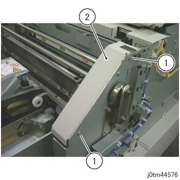
(图 1) tm44576
打开 the 顶部 中央 盖板. (图 2)
拆卸螺钉（x4）.
打开 the 顶部 中央 盖板.
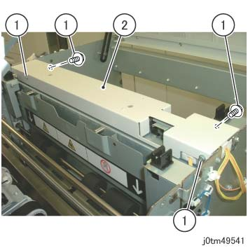
(图 2) tm49541
拆卸 线束 在前面. (图 3)
释放 卡箍 (x4) 和 拆卸 线束.
拆卸电缆 条带.
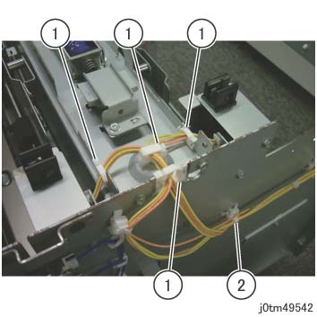
(图 3) tm49542
拆卸 线束 在后面. (图 4)
释放 卡箍 (x4) 和 拆卸 线束.
拆卸电缆 条带.
断开连接器.
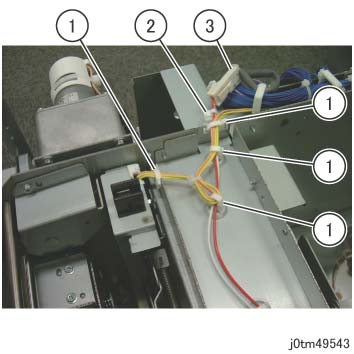
(图 4) tm49543
拆卸 螺钉 该 固定 盖板 锁定 支架 在前面. (图 5)
拆卸螺钉（x2）.
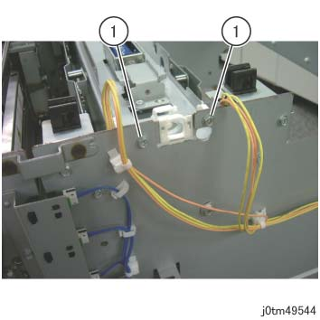
(图 5) tm49544
拆卸 螺钉 该 固定 盖板 锁定 支架 在后面. (图 6)
拆卸螺钉（x2）.
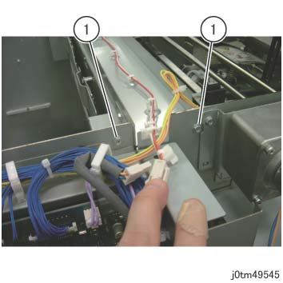
(图 6) tm49545
拆卸盖板 锁定 支架. (图 7)
拆卸盖板 锁定 支架.
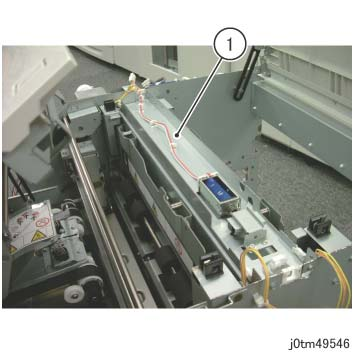
(图 7) tm49546
移动 the 顶部 左侧 盖板 前面 互锁 开关. (图 8)
拆卸螺钉（x2）.
移动 the 顶部 左侧 盖板 前面 互锁 开关.
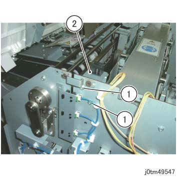
(图 8) tm49547
移动 the 顶部 右侧 盖板 互锁 开关. (图 9)
拆卸螺钉（x2）.
移动 the 顶部 右侧 盖板 互锁 开关.
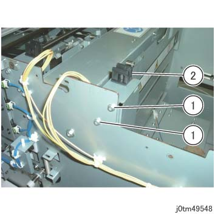
(图 9) tm49548
移动 the 顶部 左侧 盖板 后面 互锁 开关. (图 10)
拆卸螺钉（x2）.
移动 the 顶部 左侧 盖板 后面 互锁 开关.
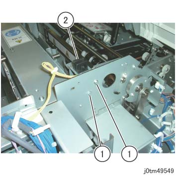
(图 10) tm49549
拆卸支架 在前面. (图 11)
拆卸螺钉.
拆卸支架.
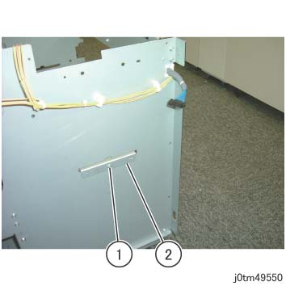
(图 11) tm49550
拆卸 螺钉 of 支架 和 LVPS 上方 支架 在后面. (图 12)
拆卸螺钉.
拆卸支架.
拆卸螺钉 的 LVPS 上方 支架.
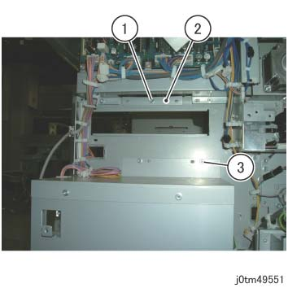
(图 12) tm49551
断开连接器 of 裁切器 Cutter. (图 13)
释放 卡箍 (x5) 和 拆卸 线束.
断开连接器（x2）.
拆卸卡箍 从 框架.
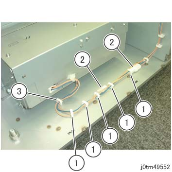
(图 13) tm49552
拆卸 Handle (x2) 从 the 新 裁切器 Cutter.
安装 Handle (2) to 裁切器 Cutter 内部 the 方背折叠裁切器. (图 14)
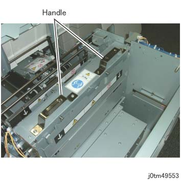
(图 14) tm49553
拆卸 螺钉 该 固定 裁切器 Cutter 在前面. (图 15)
拆卸螺钉（x2）.
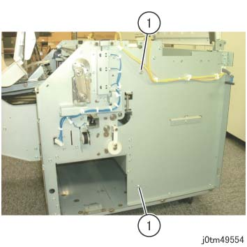
(图 15) tm49554
拆卸 螺钉 该 固定 裁切器 Cutter 在后面. (图 16)
拆卸螺钉（x2）.
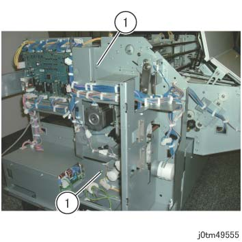
(图 16) tm49555
Get two people to 抬起 裁切器 Cutter 和 拆卸 it in the 方向 的 arrow. (图 18)
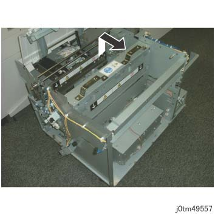
(图 17) tm49557
安装
注意不要 deform the Dust 纸张 导轨 当...时 moving 裁切器 Cutter 到 安装 位置. (图 19)
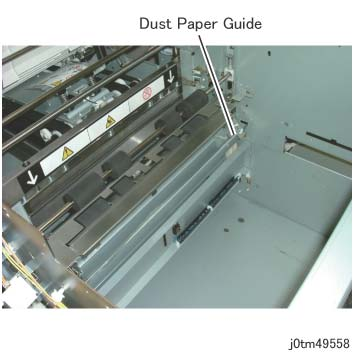
(图 18) tm49558
安装后 the 新 裁切器 Cutter, 安装 Handle (x2) on 到 旧 裁切器 Cutter.